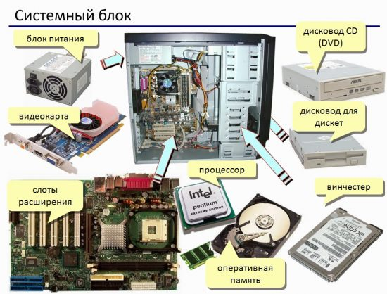

Устройство компьютеров

Персональный компьютер состоит из отдельных устройств и модулей: одни находятся внутри системного
блока, другие к нему подключаются. Последние служат для ввода или вывода информации: монитор, принтер,
сканер, клавиатура, мышь и др.
Внутри системного блока находятся устройства для обработки и хранения информации. В зависимости от
конфигурации компьютера они могут быть различными, но большинство типичных системных блоков включает
следующие устройства.
Блок питания. Вырабатывает стабилизированные напряжения для питания всех устройств, находящихся в
системном блоке. От блока питания выходят многочисленные кабели, которые подключаются к системной
плате, дисковым накопителям и другим устройствам.
Системная, или материнская, плата. Базовое устройство компьютера для установки процессора, оперативной
памяти и плат расширения. К ней подключаются устройства ввода/вывода, дисковые накопители и др. Системная
плата обеспечивает их взаимодействие, используя специальный набор микросхем системной логики, или чипсет'.
На системной плате также располагаются другие устройства, например микросхема BIOS, батарейка для питания
часов и CMOS (память с автономным питанием), тактовый генератор.
Процессор. Является «сердцем» компьютера и служит для обработки информации по заданной программе.
Оперативная память. Используется для работы операционной системы, программ и для временного хранения
текущих данных. Она выполнена в виде модулей, установленных на системную плату, и может хранить информацию
только при включенном питании.
Видеоадаптер. Обычно выполняется в виде платы расширения и служит для формирования изображения,
которое потом выводится на монитор. Современные видеоадаптеры содержат мощный видеопроцессор и большие
объемы видеопамяти, что позволяет формировать трехмерное изображение с высоким разрешением. Для недорогих
компьютеров выпускаются системные платы с интегрированным видеоадаптером, и его не нужно устанавливать
дополнительно.
Жесткий диск. Основное устройство для храпения информации в компьютере.
Дисковод. Хотя дискеты уже морально устарели, но дисководы для их чтения еще присутствуют в
большинстве компьютеров.
Привод для CD/DVD. CD/DVD широко используются для распространения информации, поэтому приводы
есть почти в каждом компьютере.
Платы расширения. При необходимости в системный блок можно установить дополнительные устройства,
выполненные в виде плат или карт расширения. Примерами таких устройств могут быть модемы, сетевые
платы, ТВ-тюнеры и многие другие.